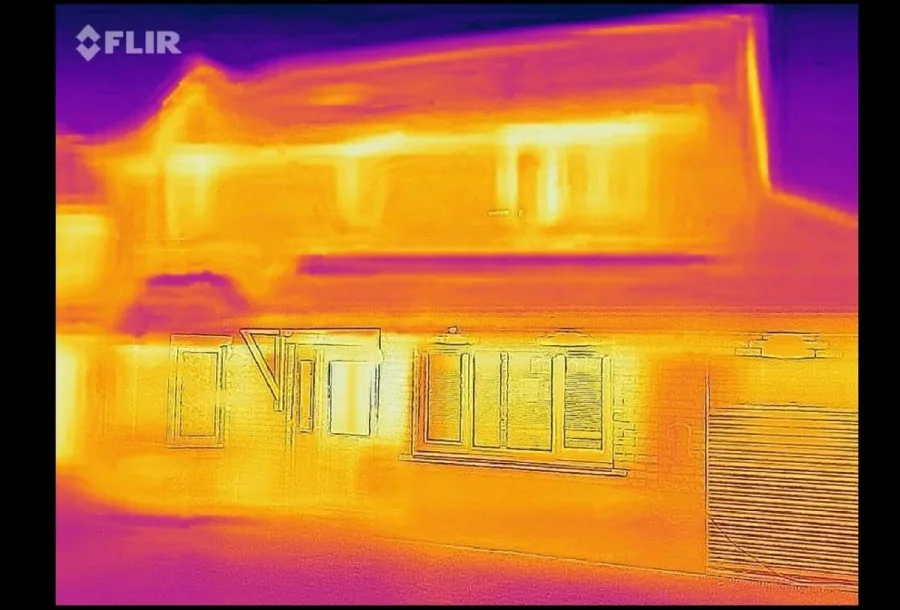
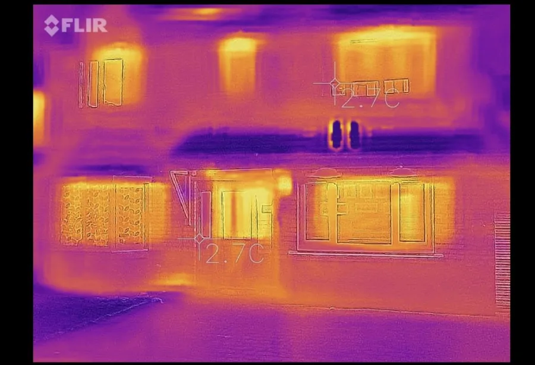

The average Texas household spends over $2,000 a year on electricity — more than almost any other state. Most of that isn't because Texans use more appliances. It's because most Texas homes were built to a lower energy standard than homes in colder climates, and decades of 100°F summers have been quietly draining wallets ever since. The good news: fixing it doesn't require a full renovation. The right few upgrades can cut your bill by 20–35%.
Why Texas Homes Are Particularly Inefficient
Texas was built fast and built cheap. From the post-war subdivisions of the 1950s to the builder-grade tracts that went up during the oil booms, energy efficiency simply wasn't a priority in residential construction for most of the state's growth period. Three specific factors make Texas homes especially prone to energy waste:
- Attic insulation that doesn't meet modern standards. Most homes built before 1990 have R-19 or less in the attic. Current recommendations for North Texas are R-38 to R-60. An under-insulated attic turns your ceiling into a radiator in July.
- Air infiltration. The average Texas home leaks the equivalent of a 2-foot-square hole in the wall. Conditioned air escapes through gaps around plumbing penetrations, attic hatches, recessed lighting, and electrical boxes. Your AC is constantly fighting this battle and losing.
- Oversized HVAC systems. Builders routinely install AC units larger than necessary to avoid callbacks. An oversized system short-cycles — it cools the air quickly but doesn't run long enough to dehumidify properly, which means it kicks on again sooner. Shorter cycles are less efficient and cause more wear.
North Texas Specifics
Wise County and Parker County homeowners face some of the most demanding cooling loads in the state. Temperatures regularly exceed 100°F from June through September, and the clay soil common across the region can shift foundations enough to create new air infiltration points over time — meaning an older home may be leakier today than when it was built.

The Biggest Energy Drains, Ranked
Before you spend money on efficiency upgrades, it helps to know where your energy is actually going. For a typical North Texas home, the breakdown looks like this:
| System | Share of Bill | Biggest Waste Factor |
|---|---|---|
| Cooling (AC) | 40–50% | Undersized insulation, air leaks, dirty coils |
| Heating | 10–15% | Duct leakage, thermostat setpoints |
| Water Heating | 12–15% | Old tank unit, uninsulated pipes |
| Appliances & Lighting | 10–15% | Incandescent bulbs, old refrigerator |
| Phantom Loads | 5–10% | Always-on electronics and chargers |
The takeaway: cooling dominates. Any efficiency investment that reduces the cooling load — better insulation, tighter air sealing, better windows — will have a disproportionate impact on your annual bill compared to replacing light bulbs or unplugging phone chargers.
Top Efficiency Upgrades by Return on Investment
Not all efficiency upgrades are equal. Some pay for themselves in two years. Others take twenty. Here's how the most common improvements stack up for a typical North Texas home:
1. Attic Air Sealing (High ROI)
This is the single most cost-effective efficiency upgrade for most Texas homes, and it's the one most overlooked. Air sealing means using foam and caulk to close every gap where conditioned air escapes into the attic — around light fixtures, top plates, plumbing chases, and attic hatches. A thorough air sealing job typically costs $500–$1,500 and can reduce cooling costs by 10–20%. Payback: 1–3 years.
2. Attic Insulation
Once the attic is sealed, adding insulation to bring it up to R-38 or R-49 is the next priority. Blown-in cellulose or fiberglass insulation runs $1,500–$3,500 for a typical home and typically reduces cooling and heating costs by 15–25%. Payback: 3–6 years. Note: insulating before sealing is a common mistake — insulation does not stop air movement, only air sealing does.
3. Smart Thermostat
A programmable or smart thermostat (Ecobee, Nest, Honeywell T6) costs $100–$250 installed and can reduce HVAC runtime by 10–15% simply by raising setpoints when the house is empty and pre-cooling before peak rate periods. This is the cheapest high-impact upgrade on the list. Payback: under 1 year.
4. Duct Sealing and Testing
Studies consistently find that 20–30% of conditioned air in a typical Texas home never reaches the living space — it escapes through leaky duct connections in the attic or crawlspace. Duct sealing with mastic compound (not duct tape, which fails over time) costs $800–$2,000 and can meaningfully reduce both cooling and heating costs. A blower door and duct leakage test will tell you exactly how bad your ducts are before you spend money.
5. HVAC Maintenance and Tune-Up
A dirty condenser coil forces your AC to work 10–15% harder. A clogged filter reduces airflow and increases runtime. A refrigerant charge that's even 10% off-spec drops efficiency significantly. Annual maintenance — cleaning coils, checking refrigerant, inspecting electrical connections — costs $80–$150 and keeps your system running at rated efficiency. If your unit is over 15 years old, a replacement with a 16+ SEER unit can cut cooling costs by 20–30% on its own.
6. Window Film or Window Replacement
South- and west-facing single-pane windows are solar collectors in July. Low-e window film ($200–$600 DIY) blocks 50–70% of solar heat gain without replacing the glass. Full window replacement is expensive ($400–$800 per window) and has a long payback period — typically 10–20 years — so it's only worth prioritizing if your windows are also failing from an air sealing standpoint.
7. LED Lighting
If you still have incandescent or CFL bulbs, replacing them with LEDs reduces lighting energy use by 75% and also reduces heat load in the home — which matters in a Texas summer when every bit of internal heat your AC has to remove costs money. LEDs pay for themselves in under a year. This is a weekend project, not a contractor job.
DIY Fixes You Can Do This Weekend
Not every efficiency improvement requires a contractor. These four fixes cost under $100 total and can make a meaningful dent in your bill:
- Weatherstrip every exterior door. Hold a piece of paper in the closed door gap — if it slides out easily, you're losing conditioned air. Foam or rubber weatherstripping runs $10–$20 per door.
- Seal around window AC units. Gaps around window units are a major infiltration point. Foam backer rod or spray foam closes them in minutes.
- Add a programmable thermostat. Even a basic $30 model that raises the setpoint by 7°F while you're at work can save 10% on cooling costs.
- Check and replace HVAC filters. A clogged 1-inch filter restricts airflow and forces your system to work harder. Replace every 60–90 days, or switch to a 4-inch media filter that lasts a year and catches more particulate.
- Insulate the attic hatch. Most pull-down attic stairs have zero insulation on the back. An attic tent or rigid foam cover is a $30–$80 DIY project that eliminates a significant air and heat transfer point.
Start With an Audit — Not a Guess
The challenge with energy efficiency is that every home is different. A 1970s brick ranch in Decatur has completely different problem areas than a 2005 frame house in Springtown. Without actually measuring where your home is losing energy, you're guessing — and guessing wrong is how homeowners spend $3,000 on new windows when the real problem is a leaky attic hatch and an oversized AC unit.
A professional home energy audit fixes that. A certified auditor walks through your entire home, uses a blower door test to measure actual air infiltration, checks insulation levels, inspects the HVAC system and ductwork, and photographs every problem they find. The result is a prioritized list: fix this first because it saves the most relative to what it costs, then this, skip this entirely because the math doesn't work for your home.
N-Tech's Standard Home Energy Audit is $299 and includes thermal imaging, a written report within 48 hours, estimated annual savings per finding, and a follow-up call to walk through everything. It also includes a free solar readiness assessment — which is relevant for the next step.

Efficiency First, Then Solar
The right order matters. If you install solar before addressing efficiency issues, you'll oversize the system to cover waste that shouldn't exist. Fix the leaks first, measure your actual reduced load, then right-size your solar system. A 10kW system on an efficient home produces better economics than a 13kW system on a leaky one.
When You're Ready for Solar
Once you've addressed the major efficiency issues in your home, solar becomes a much cleaner financial decision. Your actual energy load is lower, your system can be sized more accurately, and your payback period is shorter because you're not generating power to cover preventable waste.
North Texas is one of the strongest solar markets in the country — 229+ sunny days per year, rising Oncor rates, and Texas solar tax exemptions still in full effect through 2032. A home that's been properly air sealed and insulated first will see 7–9 year payback on solar. A home that hasn't may be looking at 10–12 years or more, simply because the system has to be larger to cover a higher load.
N-Tech handles both sides of this. We offer the home energy audit as a standalone service, and if your home is a strong solar candidate after the audit, we can build your custom solar proposal from there. One company, one conversation, no handoffs.
Start with a Home Energy Audit
Find out exactly where your home is losing energy before you spend a dollar on upgrades or solar.
Book Your Audit — $299